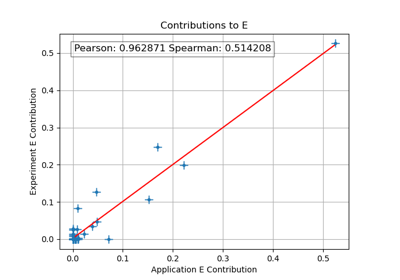
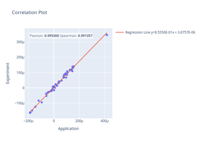

Correlation Plots
These examples demonstrate how to create correlation plots using the methods described in the technical manual.

Contribution Correlation Plots
Contribution Correlation Plots

Perturbation Correlation Plots
Perturbation Correlation Plots